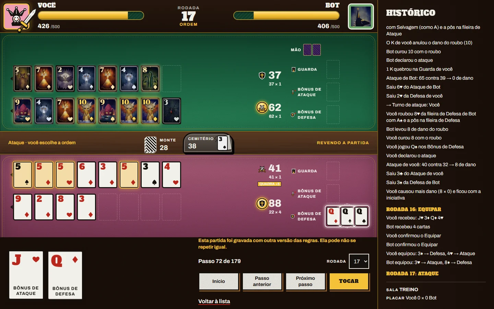
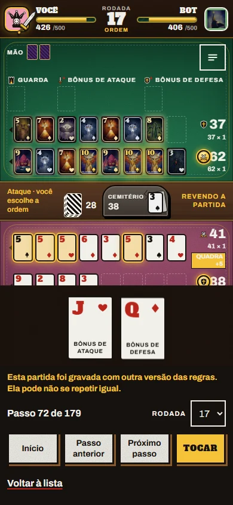
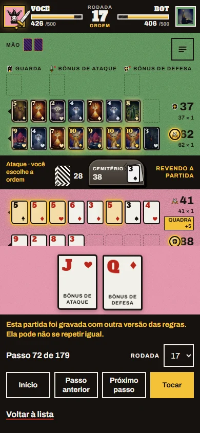

A identidade dos menus (o Folheto: o grão, a moldura, o filete e a costura, os carimbos de madeira, o tipo de madeira) levada para
dentro da partida. As três vestem o app de verdade: a mesma jogada (rodada 17, com quadra, ouro de quem lidera e o oponente no deck
Bestiário) e o Equipar do treino, no PC e no celular. Só muda o material; o arranjo, as regras e os botões ficam onde estão.

PC · 1440 × 900

Celular · 390 × 844

Hoje, para comparar
O que vale para as três
Botões e tipos
Os botões chatos de contorno (o replay, o Fechar) viram carimbos de papel com a sombra de madeira, como os do Equipar e os do menu.
O Tocar vira o carimbo de ouro, com o tipo de madeira.
Vida, ATK/DEF, contas, prévia e relógio seguem na fonte de texto, sem textura.
Textura sem exagero
Grão parado, de baixo contraste, só no fundo dos campos e das faixas. Nada se mexe no fundo.
Nada sobre as cartas: as de arte e as de cordel ficam como estão.
Rosa é você, verde é o oponente, nas três.
O que não muda
O arranjo da mesa, a ordem dos controles, as regras, o fluxo.
Os números de vida e o jeito como a barra encolhe: só a moldura e o ouro da barra mudam em cada direção.
As cenas e as inversões de tela (a conferir na direção escolhida).